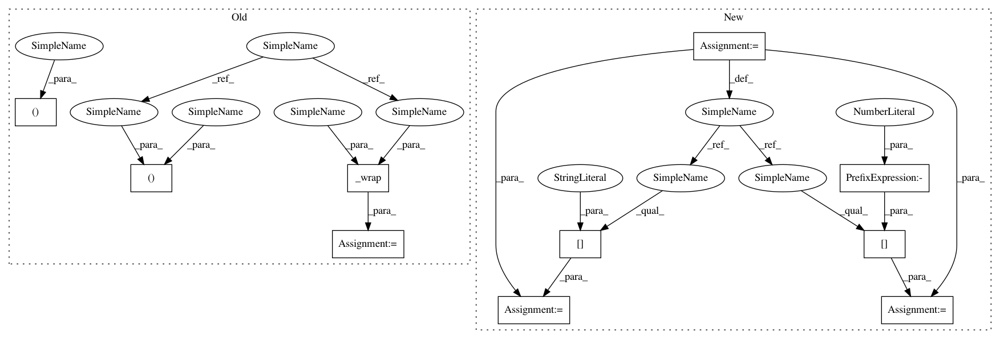

029fdb5624fafee03a59f49d86b676f25851febf,python/baseline/pytorch/tagger/train.py,TaggerTrainerPyTorch,_test,#TaggerTrainerPyTorch#Any#,75
Before Change
steps = len(ts)
pg = create_progress_bar(steps)
for x, xch, y, lengths, ids in ts:
x, xch, y = self._wrap(x, xch, y)
pred = self.model((x, xch, lengths))
correct, count, overlaps, golds, guesses = self.process_output(pred, y.data, lengths, ids, None, None)
total_correct += correct
total_sum += count
After Change
pg = create_progress_bar(steps)
for batch_dict in ts:
fx = self.model.make_input(batch_dict)
inputs = fx[:-1]
y = fx[-1]
lengths = batch_dict["lengths"]
ids = batch_dict["ids"]
pred = self.model(inputs)
correct, count, overlaps, golds, guesses = self.process_output(pred, y.data, lengths, ids, None, None)
In pattern: SUPERPATTERN
Frequency: 3
Non-data size: 10
Instances
Project Name: dpressel/mead-baseline
Commit Name: 029fdb5624fafee03a59f49d86b676f25851febf
Time: 2017-11-22
Author: dpressel@gmail.com
File Name: python/baseline/pytorch/tagger/train.py
Class Name: TaggerTrainerPyTorch
Method Name: _test
Project Name: dpressel/mead-baseline
Commit Name: 029fdb5624fafee03a59f49d86b676f25851febf
Time: 2017-11-22
Author: dpressel@gmail.com
File Name: python/baseline/pytorch/seq2seq/train.py
Class Name: Seq2SeqTrainerPyTorch
Method Name: train
Project Name: dpressel/mead-baseline
Commit Name: 029fdb5624fafee03a59f49d86b676f25851febf
Time: 2017-11-22
Author: dpressel@gmail.com
File Name: python/baseline/pytorch/seq2seq/train.py
Class Name: Seq2SeqTrainerPyTorch
Method Name: test